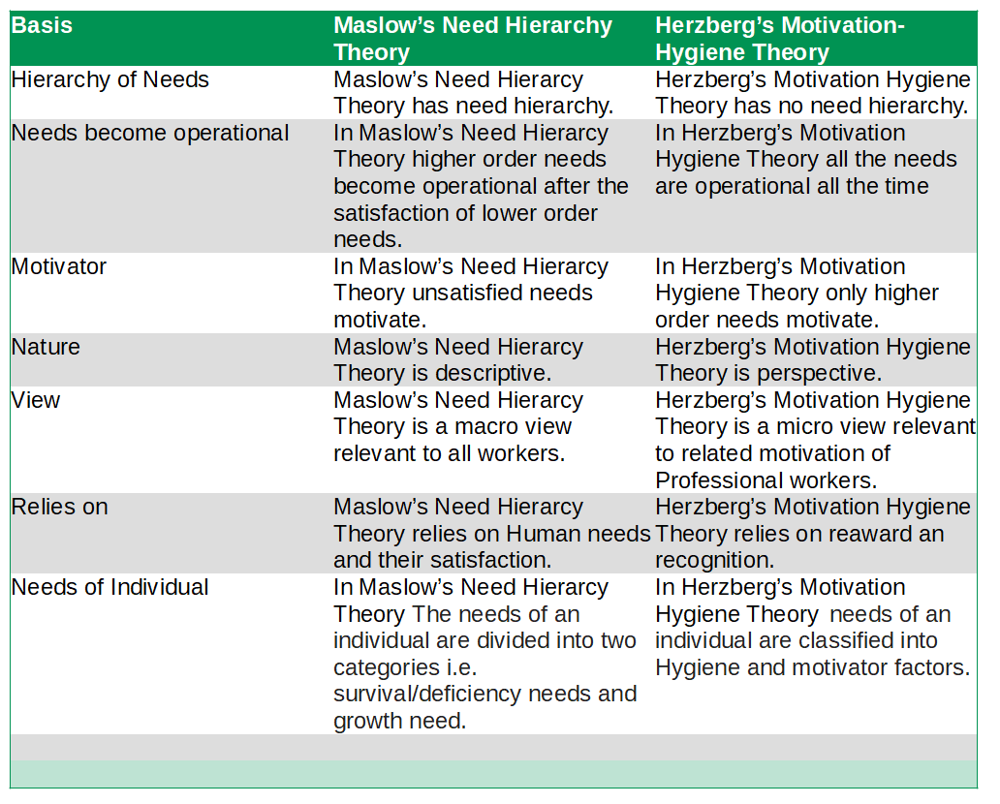

What is the main difference between Maslow's Need Hierarchy Theory and Herzberg's Motivation Theory?
The main difference between Maslow's Need Hierarchy Theory and Herzberg's Motivation Theory is Maslow's Need Hierarcy Theory has need hierarchy whereas Herzberg's Motivation Hygiene Theory has no need hierarchy.
| Basis | Maslow's Need Hierarchy Theory | Herzberg's Motivation-Hygiene Theory |
| Hierarchy of Needs | Maslow's Need Hierarcy Theory has need hierarchy. | Herzberg's Motivation Hygiene Theory has no need hierarchy. |
| Needs become operational | In Maslow's Need Hierarcy Theory higher order needs become operational after the satisfaction of lower order needs. | In Herzberg's Motivation Hygiene Theory all the needs are operational all the time |
| Motivator | In Maslow's Need Hierarcy Theory unsatisfied needs motivate. | In Herzberg's Motivation Hygiene Theory only higher order needs motivate. |
| Nature | Maslow's Need Hierarcy Theory is descriptive. | Herzberg's Motivation Hygiene Theory is perspective. |
| View | Maslow's Need Hierarcy Theory is a macro view relevant to all workers. | Herzberg's Motivation Hygiene Theory is a micro view relevant to related motivation of Professional workers. |
| Relies on | Maslow's Need Hierarcy Theory relies on Human needs and their satisfaction. | Herzberg's Motivation Hygiene Theory relies on reaward an recognition. |
| Needs of Individual | In Maslow's Need Hierarcy Theory The needs of an individual are divided into two categories i.e. survival/deficiency needs and growth need. | In Herzberg's Motivation Hygiene Theory needs of an individual are classified into Hygiene and motivator factors. |
Difference Between Maslow's Need Hierarchy Theory vs Herzberg's Motivation Theory on the basis of Hierarchy of Needs
Maslow’s Need Hierarcy Theory has need hierarchy whereas Herzberg’s Motivation Hygiene Theory has no need hierarchy.
Difference Between Maslow's Need Hierarchy Theory vs Herzberg's Motivation Theory on the basis of Needs become operational
In Maslow’s Need Hierarcy Theory higher order needs become operational after the satisfaction of lower order needs whereas In Herzberg’s Motivation Hygiene Theory all the needs are operational all the time
Difference Between Maslow's Need Hierarchy Theory vs Herzberg's Motivation Theory on the basis of Motivator
In Maslow’s Need Hierarcy Theory unsatisfied needs motivate whereas In Herzberg’s Motivation Hygiene Theory only higher order needs motivate.
Difference Between Maslow's Need Hierarchy Theory vs Herzberg's Motivation Theory on the basis of Nature
Maslow’s Need Hierarcy Theory is descriptive whereas Herzberg’s Motivation Hygiene Theory is perspective.
Difference Between Maslow's Need Hierarchy Theory vs Herzberg's Motivation Theory on the basis of View
Maslow’s Need Hierarcy Theory is a macro view relevant to all workers whereas Herzberg’s Motivation Hygiene Theory is a micro view relevant to related motivation of Professional workers.
Difference Between Maslow's Need Hierarchy Theory vs Herzberg's Motivation Theory on the basis of Need of Individual
In Maslow’s Need Hierarcy Theory The needs of an individual are divided into two categories i.e. survival/deficiency needs and growth need whereas In Herzberg’s Motivation Hygiene Theory needs of an individual are classified into Hygiene and motivator factors.
Difference Between Maslow's Need Hierarchy Theory vs Herzberg's Motivation Theory on the basis of Relies on
Maslow’s Need Hierarcy Theory relies on Human needs and their satisfaction whereas Herzberg’s Motivation Hygiene Theory relies on reaward an recognition.
Maslow's Need Hierarchy
It is simply known as need hierarchy theory. This theory was proposed by Abraham Maslow in his 1943 paper A Theory of Human Motivation. His theory suggests that people must satisfy five group of needs in order-physiological, security, social, esteem and self-actualization. The basis of Maslow's theory of motivation is that human beings are motivated by unsatisfied needs, and that certain lower needs need to be satisfied before higher needs can be addressed. These needs can be arranged in a hierarchy called 'Maslow's Needs Pyramid' or 'Maslow's Needs Triangle'. A person progresses step-by-step up this hierarchy.
Herzberg's Motivation-Hygiene Theory
This theory is also called two/dual factor theory. This theory was proposed by Fredrick Herzberg. According to Herzberg there are two factors that affect the motivation. Hygiene factor: are needed to ensure an employee does not become dissatisfies. They are also called dis-satisfiers. They are extrinsic factors. They are related to job context and environment. Motivation Factor: are needed in order to motive an employee into higher performance. They are also called satisfiers. They are intrinsic factors. They are related to job content. Motivation factors leads to satisfaction and motivates human. Some of the motivational factors are achievement, recognition, work itself, responsibility, advancement , growth, company policy ,supervision, relationship with boss, work conditions, salary, relationship with peers and security.